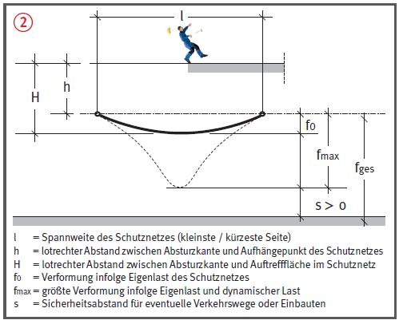
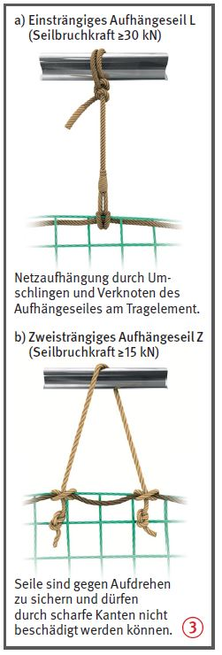
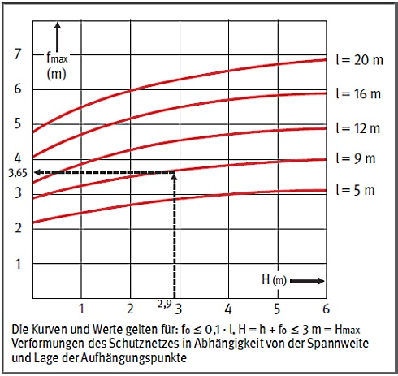

Gefährdungen
- Fehlende, beschädigte oder mangelhaft aufgehängte Schutznetze sowie fehlende Sicherungsmaßnahmen bei der Errichtung können Absturzunfälle zur Folge haben.
Schutzmaßnahmen
- Beim Verwenden von Schutznetzen als Auffangeinrichtung ist Folgendes zu beachten:
- nur geprüfte, dauerhaft gekennzeichnete und unbeschädigte Schutznetze vom System S (Netze mit Randseil) verwenden,
- Schutznetze nur einsetzen, wenn die Prüfung der Alterung nicht länger als 1 Jahr zurückliegt,
- als Absturzsicherung nur Schutznetze mit einer Maschenweite von höchstens 10 cm benutzen,
- für Schutznetze muss eine Gebrauchsanleitung auf der Baustelle vorhanden sein,
- Schutznetze sind möglichst dicht unterhalb der zu sichernden Arbeitsplätze aufzuhängen.
Zusätzliche Hinweise für das Errichten der Schutznetze
- Schutznetze nur an tragfähigen
Bauteilen befestigen
 . Jeder
Aufhängepunkt muss eine
charakteristische Last von
mindestens 6 kN aufnehmen
können. Müssen die Lasten z. B.
über Träger und Stützen weitergeleitet
werden, dann sind nur
drei Lasten (4 kN, 6 kN, 4 kN)
in ungünstigster Anordnung
anzusetzen.
. Jeder
Aufhängepunkt muss eine
charakteristische Last von
mindestens 6 kN aufnehmen
können. Müssen die Lasten z. B.
über Träger und Stützen weitergeleitet
werden, dann sind nur
drei Lasten (4 kN, 6 kN, 4 kN)
in ungünstigster Anordnung
anzusetzen.
- Beim Errichten der Netze
darauf achten, dass folgende
Bedingungen eingehalten sind:
- Die max. Absturzhöhe in ein Schutznetz mit Randseil (System S) darf 3 m nicht überschreiten.
- Bis 2 m Absturzhöhe gelten
Schutznetze als technische
Schutzmaßnahme.
- Die Verformung des Schutznetzes infolge Belastung berücksichtigen, um ein Aufschlagen von Personen auf Hindernisse zu vermeiden
 .
.
- Prüfung durch eine "zur Prüfung befähigte Person" des Erstellers nach Fertigstellung und vor Übergabe an den Nutzer, um den ordnungsgemäßen Zustand festzustellen (Nachweis-Prüfprotokoll).
- Jeder Verwender hat eine
Inaugenscheinnahme und
erforderlichenfalls eine Funktionskontrolle
durch eine
fachkundige Person vor dem
Gebrauch auf offensichtliche
Mängel durchzuführen
(Nachweis-Checkliste).


-
Beispiele für Netzaufhängung
durch Umschlingen und Verknotung mit ein- bzw. zweisträngigem Aufhängeseil
 .
Der Nachweis der Bruchkraft
kann z. B. durch ein Prüf- bzw.
Werkstoffzeugnis auf der Baustelle nachgewiesen werden.
.
Der Nachweis der Bruchkraft
kann z. B. durch ein Prüf- bzw.
Werkstoffzeugnis auf der Baustelle nachgewiesen werden.
- Der Abstand der Aufhängepunkte
darf 2,50 m nicht überschreiten
und ist so zu wählen,
dass der größte Abstand zum
Rand ≤ als 30 cm ist.
- Werden Schutznetze miteinander verbunden, sind Kopplungsseile so zu verwenden, dass an der Naht keine Zwischenräume von mehr als 100 mm auftreten und die Schutznetze sich nicht mehr als 100 mm gegeneinander verschieben können.
- Werden Schutznetze überlappend ohne Kopplungsseil verwendet,
muss die Überlappung mindestens 2,0 m betragen.
- Wenn die Freiraumhöhe unter der Befestigungsebene des
Netzes weniger als 5 m, aber mindestens 3 m beträgt, sind folgende Bedingungen einzuhalten:
- Vorgaben des Herstellers beachten,
- Länge der kürzesten Schutznetzseite ≤ 7,5 m,
- Netzdurchhang in der Mitte
des unbelasteten Netzes < 3,5 % der kürzesten Schutznetzseite
(ca. 26 cm),
- Absturzhöhe von der Absturzkante
des jeweiligen Arbeitsplatzes
zur möglichen Auftreffstelle des Schutznetzes
lotrecht < 2,5 m.

07/2021